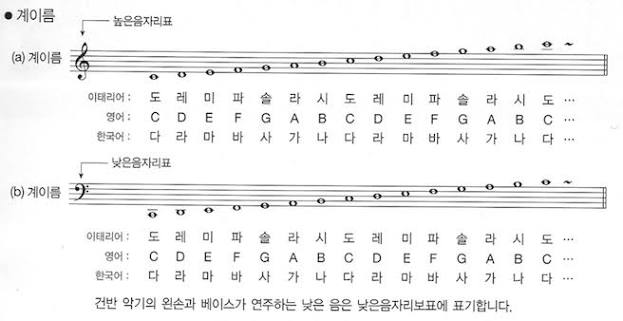

• 8분음표(♪)나 16분음표가 연속으로 나올 때, 눈이 피로하지 않도록 굵은 가로 막대(♫)로 묶어 표기합니다.
• 묶여있어도 개별 음표 박자(반 박자씩)는 똑같으니 안심하고 부세요!
🎼 하모니카 오선보 계이름 대조표

📌 하모니카 연주자를 위한 오선보 저음(아래 덧줄) 읽는 요령
• 하모니카는 오직 높은음자리표 하나만 사용합니다 : 피아노나 베이스 악기에서 쓰는 낮은음자리표는 하모니카에서 전혀 사용하지 않습니다.
• 가온 도(8번홀)보다 낮은 음은 아래 덧줄로 표기 :
- 덧줄 1개 걸침 = 가온 도(1) (8번 홀 불기 🔴)
- 덧줄 1개 아래 칸 = 저음 시(7.) (7번 홀 마시기 🔵)
- 덧줄 2개 걸침 = 저음 라(6.) (5번 홀 마시기 🔵)
- 덧줄 2개 아래 칸 = 저음 솔(5.) (6번 홀 불기 🔴)